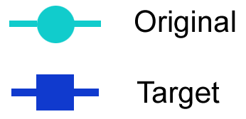

Characteristics in the actual
and target state

The lowest possible value of a property refers to the respective value of the Minimum Viable Product (MVP).
Material costs in the actual
and target state [ EUR / Unit ]
{{ d.key }}

{{ d.amount | currency: "" }}
{{ networkDataSec[$index].amount | currency: "" }}
Sum Total
{{ sum | currency: "" }}
{{ newSum | currency: ""}}
{{ ((newSum - sum)/sum).toFixed(2) }}